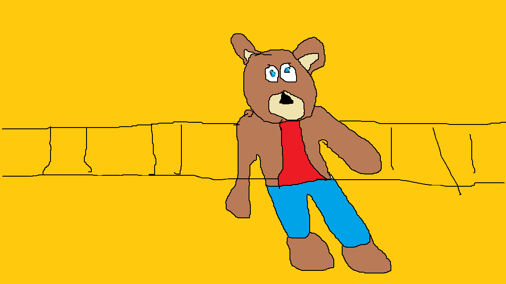
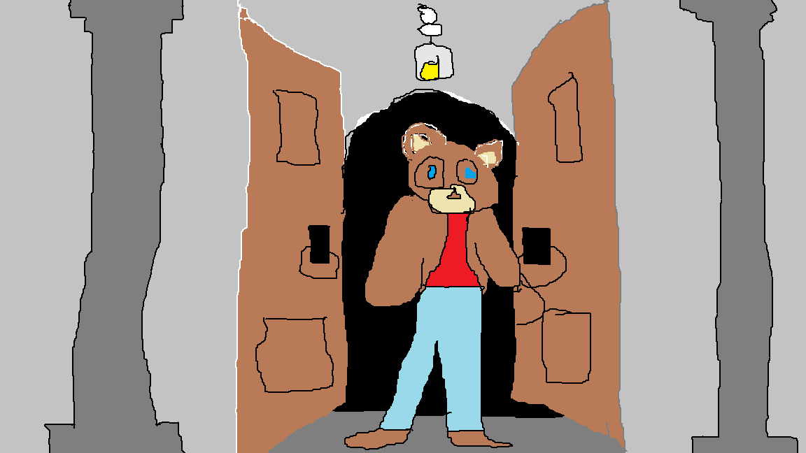
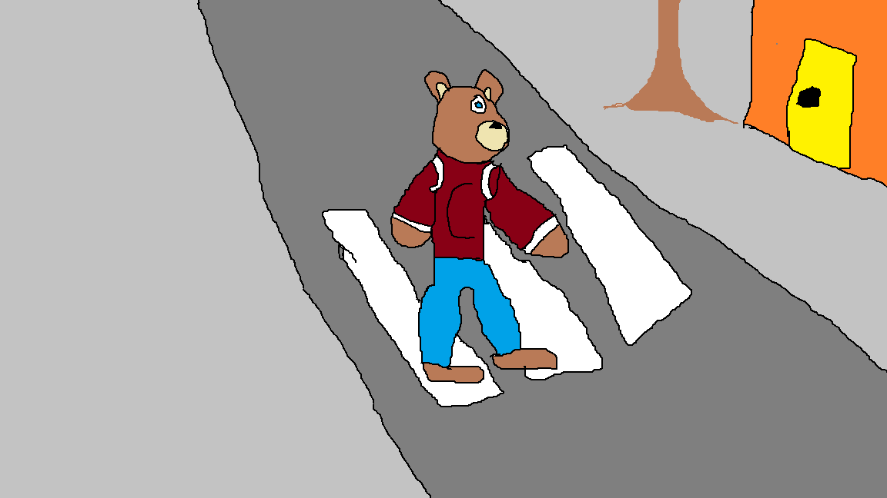
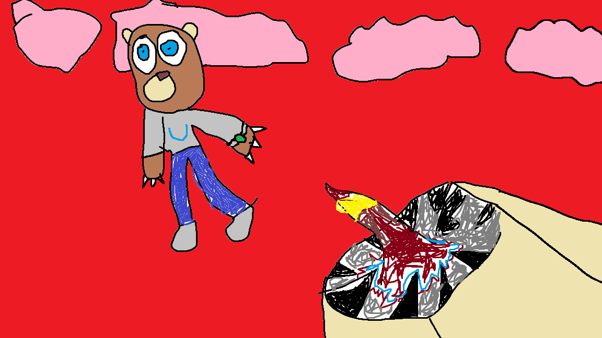
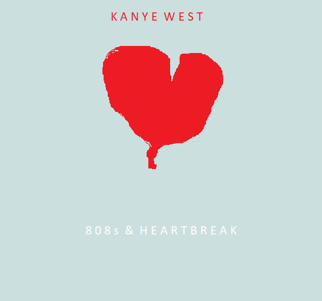
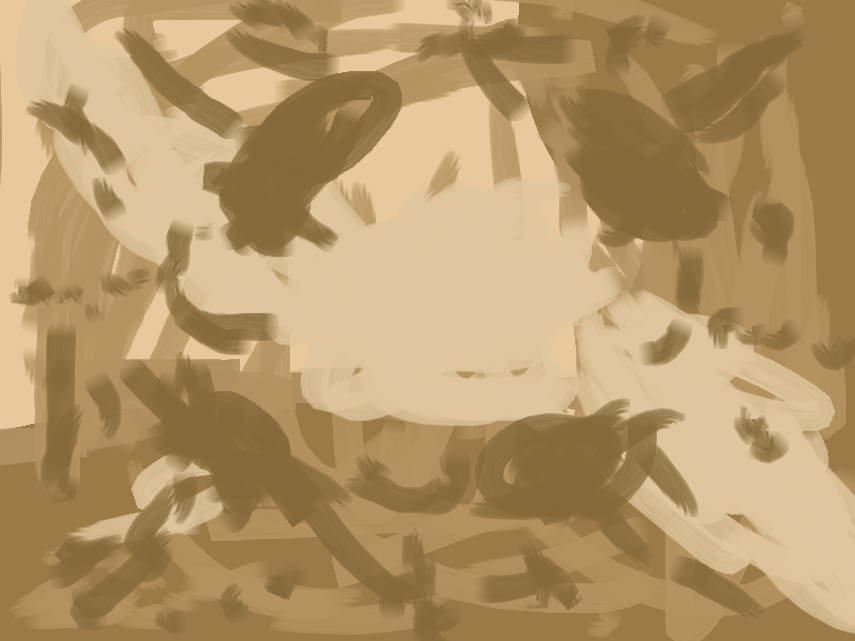
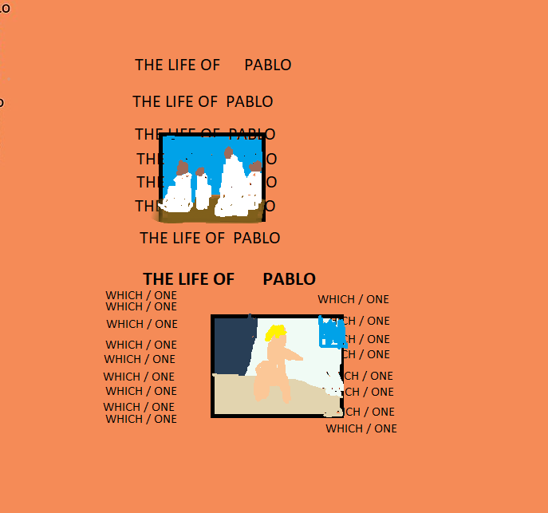
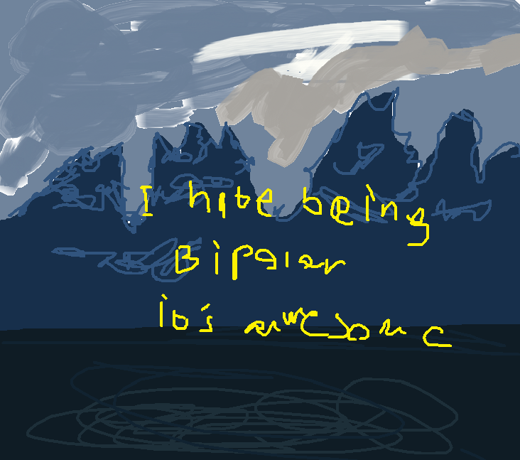
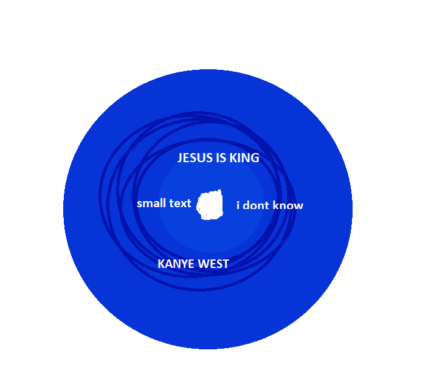
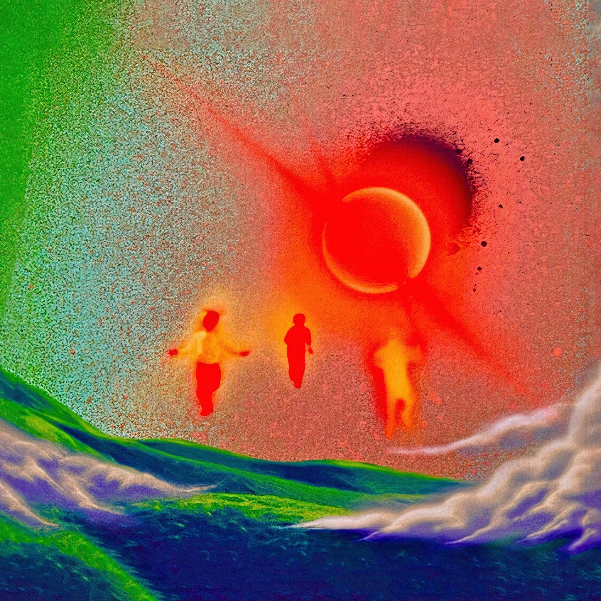

The College Dropout: The first album that Kanye West released. It came out in 2004.


Late registration: the second album that Kanye released. It came out in 2005.
Late orchestration: the third album Kanye released. It came out in 2006.


Graduation: The fourth album from Kanye. It came out in 2007.
808s & heartbreak: The fifth album Kanye released. It came out in 2008.

My Beautiful Dark Twisted Fantasy: The sixth album. Released 2010.
Watch The Throne: The seventh album Kanye released which is a collaborative album with Jay-Z. Released 2011.


Yeezus: The eigth album in Kanye's discography. Released in 2013.
The Life of Pablo: The ninth album from Kanye. Released in 2016.


Ye: The tenth album. Released in 2018.
Kids see Ghosts: The eleventh album. A colleborative album between Kanye and Kid Cudi. Released in 2018.


Jesus is King: The twelfth album. Released in 2019.
Donda: the thirteenth album and the latest album Kanye has dropped. Released in 2021.
